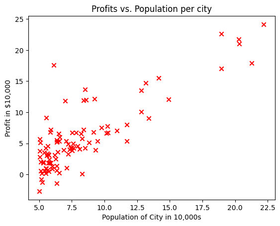
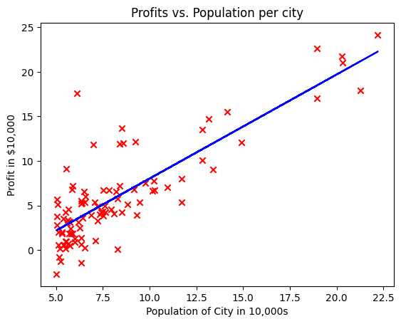

Practice Lab: Linear Regression#
Welcome to your first practice lab! In this lab, you will implement linear regression with one variable to predict profits for a restaurant franchise.
NOTE: To prevent errors from the autograder, you are not allowed to edit or delete non-graded cells in this notebook . Please also refrain from adding any new cells. Once you have passed this assignment and want to experiment with any of the non-graded code, you may follow the instructions at the bottom of this notebook.
1 - Packages#
First, let’s run the cell below to import all the packages that you will need during this assignment.
numpy is the fundamental package for working with matrices in Python.
matplotlib is a famous library to plot graphs in Python.
utils.pycontains helper functions for this assignment. You do not need to modify code in this file.
import numpy as np
import matplotlib.pyplot as plt
from utils import *
import copy
import math
%matplotlib inline
2 - Problem Statement#
Suppose you are the CEO of a restaurant franchise and are considering different cities for opening a new outlet.
You would like to expand your business to cities that may give your restaurant higher profits.
The chain already has restaurants in various cities and you have data for profits and populations from the cities.
You also have data on cities that are candidates for a new restaurant.
For these cities, you have the city population.
Can you use the data to help you identify which cities may potentially give your business higher profits?
3 - Dataset#
You will start by loading the dataset for this task.
The
load_data()function shown below loads the data into variablesx_trainandy_trainx_trainis the population of a cityy_trainis the profit of a restaurant in that city. A negative value for profit indicates a loss.Both
X_trainandy_trainare numpy arrays.
# load the dataset
x_train, y_train = load_data()
View the variables#
Before starting on any task, it is useful to get more familiar with your dataset.
A good place to start is to just print out each variable and see what it contains.
The code below prints the variable x_train and the type of the variable.
# print x_train
print("Type of x_train:",type(x_train))
print("First five elements of x_train are:\n", x_train[:5])
Type of x_train: <class 'numpy.ndarray'>
First five elements of x_train are:
[6.1101 5.5277 8.5186 7.0032 5.8598]
x_train is a numpy array that contains decimal values that are all greater than zero.
These values represent the city population times 10,000
For example, 6.1101 means that the population for that city is 61,101
Now, let’s print y_train
# print y_train
print("Type of y_train:",type(y_train))
print("First five elements of y_train are:\n", y_train[:5])
Type of y_train: <class 'numpy.ndarray'>
First five elements of y_train are:
[17.592 9.1302 13.662 11.854 6.8233]
Similarly, y_train is a numpy array that has decimal values, some negative, some positive.
These represent your restaurant’s average monthly profits in each city, in units of $10,000.
For example, 17.592 represents $175,920 in average monthly profits for that city.
-2.6807 represents -$26,807 in average monthly loss for that city.
Check the dimensions of your variables#
Another useful way to get familiar with your data is to view its dimensions.
Please print the shape of x_train and y_train and see how many training examples you have in your dataset.
print ('The shape of x_train is:', x_train.shape)
print ('The shape of y_train is: ', y_train.shape)
print ('Number of training examples (m):', len(x_train))
The shape of x_train is: (97,)
The shape of y_train is: (97,)
Number of training examples (m): 97
The city population array has 97 data points, and the monthly average profits also has 97 data points. These are NumPy 1D arrays.
Visualize your data#
It is often useful to understand the data by visualizing it.
For this dataset, you can use a scatter plot to visualize the data, since it has only two properties to plot (profit and population).
Many other problems that you will encounter in real life have more than two properties (for example, population, average household income, monthly profits, monthly sales).When you have more than two properties, you can still use a scatter plot to see the relationship between each pair of properties.
# Create a scatter plot of the data. To change the markers to red "x",
# we used the 'marker' and 'c' parameters
plt.scatter(x_train, y_train, marker='x', c='r')
# Set the title
plt.title("Profits vs. Population per city")
# Set the y-axis label
plt.ylabel('Profit in $10,000')
# Set the x-axis label
plt.xlabel('Population of City in 10,000s')
plt.show()

Your goal is to build a linear regression model to fit this data.
With this model, you can then input a new city’s population, and have the model estimate your restaurant’s potential monthly profits for that city.
4 - Refresher on linear regression#
In this practice lab, you will fit the linear regression parameters \((w,b)\) to your dataset.
The model function for linear regression, which is a function that maps from
x(city population) toy(your restaurant’s monthly profit for that city) is represented as $\(f_{w,b}(x) = wx + b\)$To train a linear regression model, you want to find the best \((w,b)\) parameters that fit your dataset.
To compare how one choice of \((w,b)\) is better or worse than another choice, you can evaluate it with a cost function \(J(w,b)\)
\(J\) is a function of \((w,b)\). That is, the value of the cost \(J(w,b)\) depends on the value of \((w,b)\).
The choice of \((w,b)\) that fits your data the best is the one that has the smallest cost \(J(w,b)\).
To find the values \((w,b)\) that gets the smallest possible cost \(J(w,b)\), you can use a method called gradient descent.
With each step of gradient descent, your parameters \((w,b)\) come closer to the optimal values that will achieve the lowest cost \(J(w,b)\).
The trained linear regression model can then take the input feature \(x\) (city population) and output a prediction \(f_{w,b}(x)\) (predicted monthly profit for a restaurant in that city).
5 - Compute Cost#
Gradient descent involves repeated steps to adjust the value of your parameter \((w,b)\) to gradually get a smaller and smaller cost \(J(w,b)\).
At each step of gradient descent, it will be helpful for you to monitor your progress by computing the cost \(J(w,b)\) as \((w,b)\) gets updated.
In this section, you will implement a function to calculate \(J(w,b)\) so that you can check the progress of your gradient descent implementation.
Cost function#
As you may recall from the lecture, for one variable, the cost function for linear regression \(J(w,b)\) is defined as
You can think of \(f_{w,b}(x^{(i)})\) as the model’s prediction of your restaurant’s profit, as opposed to \(y^{(i)}\), which is the actual profit that is recorded in the data.
\(m\) is the number of training examples in the dataset
Model prediction#
For linear regression with one variable, the prediction of the model \(f_{w,b}\) for an example \(x^{(i)}\) is representented as:
This is the equation for a line, with an intercept \(b\) and a slope \(w\)
Implementation#
Please complete the compute_cost() function below to compute the cost \(J(w,b)\).
Exercise 1#
Complete the compute_cost below to:
Iterate over the training examples, and for each example, compute:
The prediction of the model for that example $\( f_{wb}(x^{(i)}) = wx^{(i)} + b \)$
The cost for that example $\(cost^{(i)} = (f_{wb} - y^{(i)})^2\)$
Return the total cost over all examples $\(J(\mathbf{w},b) = \frac{1}{2m} \sum\limits_{i = 0}^{m-1} cost^{(i)}\)$
Here, \(m\) is the number of training examples and \(\sum\) is the summation operator
If you get stuck, you can check out the hints presented after the cell below to help you with the implementation.
# UNQ_C1
# GRADED FUNCTION: compute_cost
def compute_cost(x, y, w, b):
"""
Computes the cost function for linear regression.
Args:
x (ndarray): Shape (m,) Input to the model (Population of cities)
y (ndarray): Shape (m,) Label (Actual profits for the cities)
w, b (scalar): Parameters of the model
Returns
total_cost (float): The cost of using w,b as the parameters for linear regression
to fit the data points in x and y
"""
# number of training examples
m = x.shape[0]
# You need to return this variable correctly
total_cost = 0
### START CODE HERE ###
for i in range(m):
f_wb = w * x[i] + b
cost = (f_wb - y[i]) ** 2
total_cost = total_cost + cost
total_cost = (1 / (2 * m)) * total_cost
# return total_cost
### END CODE HERE ###
return total_cost
Click for hints
You can represent a summation operator eg: \(h = \sum\limits_{i = 0}^{m-1} 2i\) in code as follows:
```python
h = 0
for i in range(m):
h = h + 2*i
```
In this case, you can iterate over all the examples in
xusing a for loop and add thecostfrom each iteration to a variable (cost_sum) initialized outside the loop.Then, you can return the
total_costascost_sumdivided by2m.If you are new to Python, please check that your code is properly indented with consistent spaces or tabs. Otherwise, it might produce a different output or raise an
IndentationError: unexpected indenterror. You can refer to this topic in our community for details.
<details>
<summary><font size="2" color="darkblue"><b> Click for more hints</b></font></summary>
* Here's how you can structure the overall implementation for this function
```python
def compute_cost(x, y, w, b):
# number of training examples
m = x.shape[0]
# You need to return this variable correctly
total_cost = 0
### START CODE HERE ###
# Variable to keep track of sum of cost from each example
cost_sum = 0
# Loop over training examples
for i in range(m):
# Your code here to get the prediction f_wb for the ith example
f_wb =
# Your code here to get the cost associated with the ith example
cost =
# Add to sum of cost for each example
cost_sum = cost_sum + cost
# Get the total cost as the sum divided by (2*m)
total_cost = (1 / (2 * m)) * cost_sum
### END CODE HERE ###
return total_cost
```
* If you're still stuck, you can check the hints presented below to figure out how to calculate `f_wb` and `cost`.
<details>
<summary><font size="2" color="darkblue"><b>Hint to calculate f_wb</b></font></summary>
    For scalars $a$, $b$ and $c$ (<code>x[i]</code>, <code>w</code> and <code>b</code> are all scalars), you can calculate the equation $h = ab + c$ in code as <code>h = a * b + c</code>
<details>
<summary><font size="2" color="blue"><b>    More hints to calculate f</b></font></summary>
    You can compute f_wb as <code>f_wb = w * x[i] + b </code>
</details>
</details>
<details>
<summary><font size="2" color="darkblue"><b>Hint to calculate cost</b></font></summary>
    You can calculate the square of a variable z as z**2
<details>
<summary><font size="2" color="blue"><b>    More hints to calculate cost</b></font></summary>
    You can compute cost as <code>cost = (f_wb - y[i]) ** 2</code>
</details>
</details>
</details>
You can check if your implementation was correct by running the following test code:
# Compute cost with some initial values for paramaters w, b
initial_w = 2
initial_b = 1
cost = compute_cost(x_train, y_train, initial_w, initial_b)
print(type(cost))
print(f'Cost at initial w: {cost:.3f}')
# Public tests
from public_tests import *
compute_cost_test(compute_cost)
<class 'numpy.float64'>
Cost at initial w: 75.203
All tests passed!
Expected Output:
| Cost at initial w: 75.203 |
6 - Gradient descent#
In this section, you will implement the gradient for parameters \(w, b\) for linear regression.
As described in the lecture videos, the gradient descent algorithm is:
where, parameters \(w, b\) are both updated simultaniously and where
$\(
\frac{\partial J(w,b)}{\partial b} = \frac{1}{m} \sum\limits_{i = 0}^{m-1} (f_{w,b}(x^{(i)}) - y^{(i)}) \tag{2}
\)\(
\)\(
\frac{\partial J(w,b)}{\partial w} = \frac{1}{m} \sum\limits_{i = 0}^{m-1} (f_{w,b}(x^{(i)}) -y^{(i)})x^{(i)} \tag{3}
\)$
m is the number of training examples in the dataset
\(f_{w,b}(x^{(i)})\) is the model’s prediction, while \(y^{(i)}\), is the target value
You will implement a function called compute_gradient which calculates \(\frac{\partial J(w)}{\partial w}\), \(\frac{\partial J(w)}{\partial b}\)
Exercise 2#
Please complete the compute_gradient function to:
Iterate over the training examples, and for each example, compute:
The prediction of the model for that example $\( f_{wb}(x^{(i)}) = wx^{(i)} + b \)$
The gradient for the parameters \(w, b\) from that example $\( \frac{\partial J(w,b)}{\partial b}^{(i)} = (f_{w,b}(x^{(i)}) - y^{(i)}) \)\( \)\( \frac{\partial J(w,b)}{\partial w}^{(i)} = (f_{w,b}(x^{(i)}) -y^{(i)})x^{(i)} \)$
Return the total gradient update from all the examples $\( \frac{\partial J(w,b)}{\partial b} = \frac{1}{m} \sum\limits_{i = 0}^{m-1} \frac{\partial J(w,b)}{\partial b}^{(i)} \)$
\[ \frac{\partial J(w,b)}{\partial w} = \frac{1}{m} \sum\limits_{i = 0}^{m-1} \frac{\partial J(w,b)}{\partial w}^{(i)} \]Here, \(m\) is the number of training examples and \(\sum\) is the summation operator
If you get stuck, you can check out the hints presented after the cell below to help you with the implementation.
# UNQ_C2
# GRADED FUNCTION: compute_gradient
def compute_gradient(x, y, w, b):
"""
Computes the gradient for linear regression
Args:
x (ndarray): Shape (m,) Input to the model (Population of cities)
y (ndarray): Shape (m,) Label (Actual profits for the cities)
w, b (scalar): Parameters of the model
Returns
dj_dw (scalar): The gradient of the cost w.r.t. the parameters w
dj_db (scalar): The gradient of the cost w.r.t. the parameter b
"""
# Number of training examples
m = x.shape[0]
# You need to return the following variables correctly
dj_dw = 0
dj_db = 0
for i in range(m):
f_wb = w * x[i] + b
dj_dw_i = (f_wb - y[i]) * x[i]
dj_db_i = f_wb - y[i]
dj_db += dj_db_i
dj_dw += dj_dw_i
dj_dw = dj_dw / m
dj_db = dj_db / m
### START CODE HERE ###
### END CODE HERE ###
return dj_dw, dj_db
Click for hints
You can represent a summation operator eg: \(h = \sum\limits_{i = 0}^{m-1} 2i\) in code as follows:
h = 0
for i in range(m):
h = h + 2*i
In this case, you can iterate over all the examples in
xusing a for loop and for each example, keep adding the gradient from that example to the variablesdj_dwanddj_dbwhich are initialized outside the loop.Then, you can return
dj_dwanddj_dbboth divided bym.
<details>
<summary><font size="2" color="darkblue"><b> Click for more hints</b></font></summary>
* Here's how you can structure the overall implementation for this function
```python
def compute_gradient(x, y, w, b):
"""
Computes the gradient for linear regression
Args:
x (ndarray): Shape (m,) Input to the model (Population of cities)
y (ndarray): Shape (m,) Label (Actual profits for the cities)
w, b (scalar): Parameters of the model
Returns
dj_dw (scalar): The gradient of the cost w.r.t. the parameters w
dj_db (scalar): The gradient of the cost w.r.t. the parameter b
"""
# Number of training examples
m = x.shape[0]
# You need to return the following variables correctly
dj_dw = 0
dj_db = 0
### START CODE HERE ###
# Loop over examples
for i in range(m):
# Your code here to get prediction f_wb for the ith example
f_wb =
# Your code here to get the gradient for w from the ith example
dj_dw_i =
# Your code here to get the gradient for b from the ith example
dj_db_i =
# Update dj_db : In Python, a += 1 is the same as a = a + 1
dj_db += dj_db_i
# Update dj_dw
dj_dw += dj_dw_i
# Divide both dj_dw and dj_db by m
dj_dw = dj_dw / m
dj_db = dj_db / m
### END CODE HERE ###
return dj_dw, dj_db
```
* If you're still stuck, you can check the hints presented below to figure out how to calculate `f_wb` and `cost`.
<details>
<summary><font size="2" color="darkblue"><b>Hint to calculate f_wb</b></font></summary>
    You did this in the previous exercise! For scalars $a$, $b$ and $c$ (<code>x[i]</code>, <code>w</code> and <code>b</code> are all scalars), you can calculate the equation $h = ab + c$ in code as <code>h = a * b + c</code>
<details>
<summary><font size="2" color="blue"><b>    More hints to calculate f</b></font></summary>
    You can compute f_wb as <code>f_wb = w * x[i] + b </code>
</details>
</details>
<details>
<summary><font size="2" color="darkblue"><b>Hint to calculate dj_dw_i</b></font></summary>
    For scalars $a$, $b$ and $c$ (<code>f_wb</code>, <code>y[i]</code> and <code>x[i]</code> are all scalars), you can calculate the equation $h = (a - b)c$ in code as <code>h = (a-b)*c</code>
<details>
<summary><font size="2" color="blue"><b>    More hints to calculate f</b></font></summary>
    You can compute dj_dw_i as <code>dj_dw_i = (f_wb - y[i]) * x[i] </code>
</details>
</details>
<details>
<summary><font size="2" color="darkblue"><b>Hint to calculate dj_db_i</b></font></summary>
    You can compute dj_db_i as <code> dj_db_i = f_wb - y[i] </code>
</details>
</details>
Run the cells below to check your implementation of the compute_gradient function with two different initializations of the parameters \(w\),\(b\).
# Compute and display gradient with w initialized to zeroes
initial_w = 0
initial_b = 0
tmp_dj_dw, tmp_dj_db = compute_gradient(x_train, y_train, initial_w, initial_b)
print('Gradient at initial w, b (zeros):', tmp_dj_dw, tmp_dj_db)
compute_gradient_test(compute_gradient)
Gradient at initial w, b (zeros): -65.32884974555672 -5.83913505154639
Using X with shape (4, 1)
All tests passed!
Now let’s run the gradient descent algorithm implemented above on our dataset.
Expected Output:
| Gradient at initial , b (zeros) | -65.32884975 -5.83913505154639 |
# Compute and display cost and gradient with non-zero w
test_w = 0.2
test_b = 0.2
tmp_dj_dw, tmp_dj_db = compute_gradient(x_train, y_train, test_w, test_b)
print('Gradient at test w, b:', tmp_dj_dw, tmp_dj_db)
Gradient at test w, b:
-47.41610118114435 -4.007175051546391
Expected Output:
| Gradient at test w | -47.41610118 -4.007175051546391 |
2.6 Learning parameters using batch gradient descent#
You will now find the optimal parameters of a linear regression model by using batch gradient descent. Recall batch refers to running all the examples in one iteration.
You don’t need to implement anything for this part. Simply run the cells below.
A good way to verify that gradient descent is working correctly is to look at the value of \(J(w,b)\) and check that it is decreasing with each step.
Assuming you have implemented the gradient and computed the cost correctly and you have an appropriate value for the learning rate alpha, \(J(w,b)\) should never increase and should converge to a steady value by the end of the algorithm.
def gradient_descent(x, y, w_in, b_in, cost_function, gradient_function, alpha, num_iters):
"""
Performs batch gradient descent to learn theta. Updates theta by taking
num_iters gradient steps with learning rate alpha
Args:
x : (ndarray): Shape (m,)
y : (ndarray): Shape (m,)
w_in, b_in : (scalar) Initial values of parameters of the model
cost_function: function to compute cost
gradient_function: function to compute the gradient
alpha : (float) Learning rate
num_iters : (int) number of iterations to run gradient descent
Returns
w : (ndarray): Shape (1,) Updated values of parameters of the model after
running gradient descent
b : (scalar) Updated value of parameter of the model after
running gradient descent
"""
# number of training examples
m = len(x)
# An array to store cost J and w's at each iteration — primarily for graphing later
J_history = []
w_history = []
w = copy.deepcopy(w_in) #avoid modifying global w within function
b = b_in
for i in range(num_iters):
# Calculate the gradient and update the parameters
dj_dw, dj_db = gradient_function(x, y, w, b )
# Update Parameters using w, b, alpha and gradient
w = w - alpha * dj_dw
b = b - alpha * dj_db
# Save cost J at each iteration
if i<100000: # prevent resource exhaustion
cost = cost_function(x, y, w, b)
J_history.append(cost)
# Print cost every at intervals 10 times or as many iterations if < 10
if i% math.ceil(num_iters/10) == 0:
w_history.append(w)
print(f"Iteration {i:4}: Cost {float(J_history[-1]):8.2f} ")
return w, b, J_history, w_history #return w and J,w history for graphing
Now let’s run the gradient descent algorithm above to learn the parameters for our dataset.
# initialize fitting parameters. Recall that the shape of w is (n,)
initial_w = 0.
initial_b = 0.
# some gradient descent settings
iterations = 1500
alpha = 0.01
w,b,_,_ = gradient_descent(x_train ,y_train, initial_w, initial_b,
compute_cost, compute_gradient, alpha, iterations)
print("w,b found by gradient descent:", w, b)
Iteration 0: Cost 6.74
Iteration 150: Cost 5.31
Iteration 300: Cost 4.96
Iteration 450: Cost 4.76
Iteration 600: Cost 4.64
Iteration 750: Cost 4.57
Iteration 900: Cost 4.53
Iteration 1050: Cost 4.51
Iteration 1200: Cost 4.50
Iteration 1350: Cost 4.49
w,b found by gradient descent: 1.166362350335582 -3.63029143940436
Expected Output:
| w, b found by gradient descent | 1.16636235 -3.63029143940436 |
We will now use the final parameters from gradient descent to plot the linear fit.
Recall that we can get the prediction for a single example \(f(x^{(i)})= wx^{(i)}+b\).
To calculate the predictions on the entire dataset, we can loop through all the training examples and calculate the prediction for each example. This is shown in the code block below.
m = x_train.shape[0]
predicted = np.zeros(m)
for i in range(m):
predicted[i] = w * x_train[i] + b
We will now plot the predicted values to see the linear fit.
# Plot the linear fit
plt.plot(x_train, predicted, c = "b")
# Create a scatter plot of the data.
plt.scatter(x_train, y_train, marker='x', c='r')
# Set the title
plt.title("Profits vs. Population per city")
# Set the y-axis label
plt.ylabel('Profit in $10,000')
# Set the x-axis label
plt.xlabel('Population of City in 10,000s')
Text(0.5, 0, 'Population of City in 10,000s')

Your final values of \(w,b\) can also be used to make predictions on profits. Let’s predict what the profit would be in areas of 35,000 and 70,000 people.
The model takes in population of a city in 10,000s as input.
Therefore, 35,000 people can be translated into an input to the model as
np.array([3.5])Similarly, 70,000 people can be translated into an input to the model as
np.array([7.])
predict1 = 3.5 * w + b
print('For population = 35,000, we predict a profit of $%.2f' % (predict1*10000))
predict2 = 7.0 * w + b
print('For population = 70,000, we predict a profit of $%.2f' % (predict2*10000))
For population = 35,000, we predict a profit of $4519.77
For population = 70,000, we predict a profit of $45342.45
Expected Output:
| For population = 35,000, we predict a profit of | $4519.77 |
| For population = 70,000, we predict a profit of | $45342.45 |
Congratulations on completing this practice lab on linear regression! Next week, you will create models to solve a different type of problem: classification. See you there!
Please click here if you want to experiment with any of the non-graded code.
Important Note: Please only do this when you've already passed the assignment to avoid problems with the autograder.
- On the notebook’s menu, click “View” > “Cell Toolbar” > “Edit Metadata”
- Hit the “Edit Metadata” button next to the code cell which you want to lock/unlock
- Set the attribute value for “editable” to:
- “true” if you want to unlock it
- “false” if you want to lock it
- On the notebook’s menu, click “View” > “Cell Toolbar” > “None”
Here's a short demo of how to do the steps above: